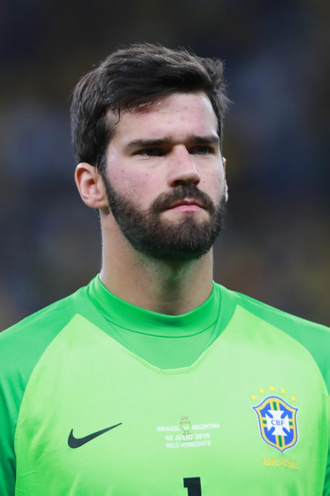
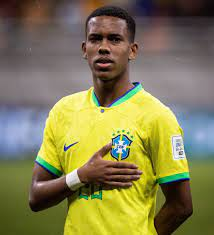
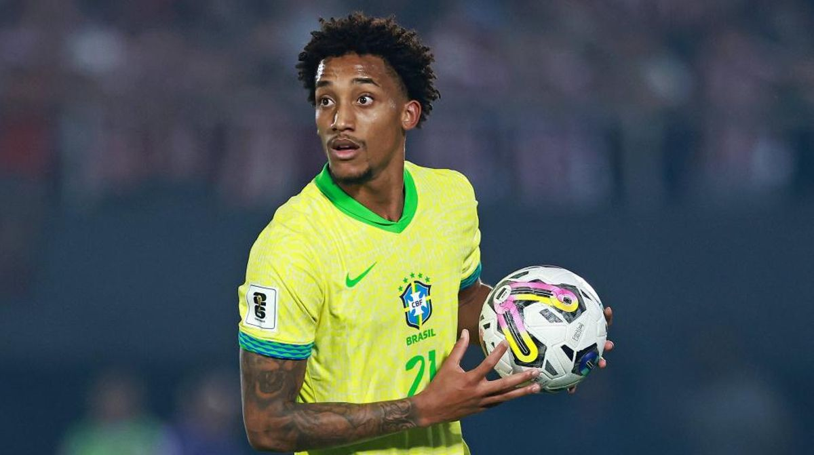
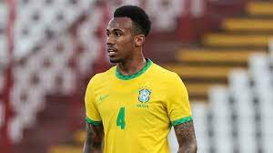

| Alisson Becker |
Portero |
31 |
Arquero del Liverpool y uno de los referentes en la portería de Brasil. |
 |
| Bruno Guimarães |
Mediocampista |
26 |
Centrocampista del Newcastle United, pieza clave en el mediocampo. |
|
| Endrick Felipe Moreira |
Delantero |
18 |
Promesa del fútbol brasileño, actualmente en Palmeiras y próximo al Real Madrid. |
 |
| João Pedro |
Delantero |
22 |
Delantero del Brighton en la Premier League, gran proyección ofensiva. |
 |
| Gabriel Magalhães |
Defensa central |
26 |
Defensor del Arsenal, sólido en la zaga brasileña. |
 |